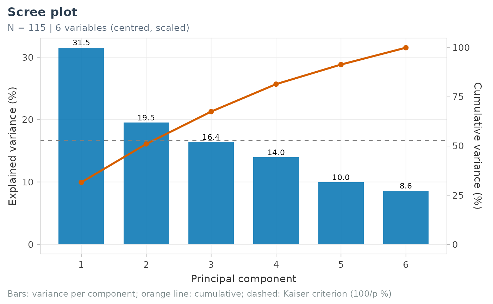
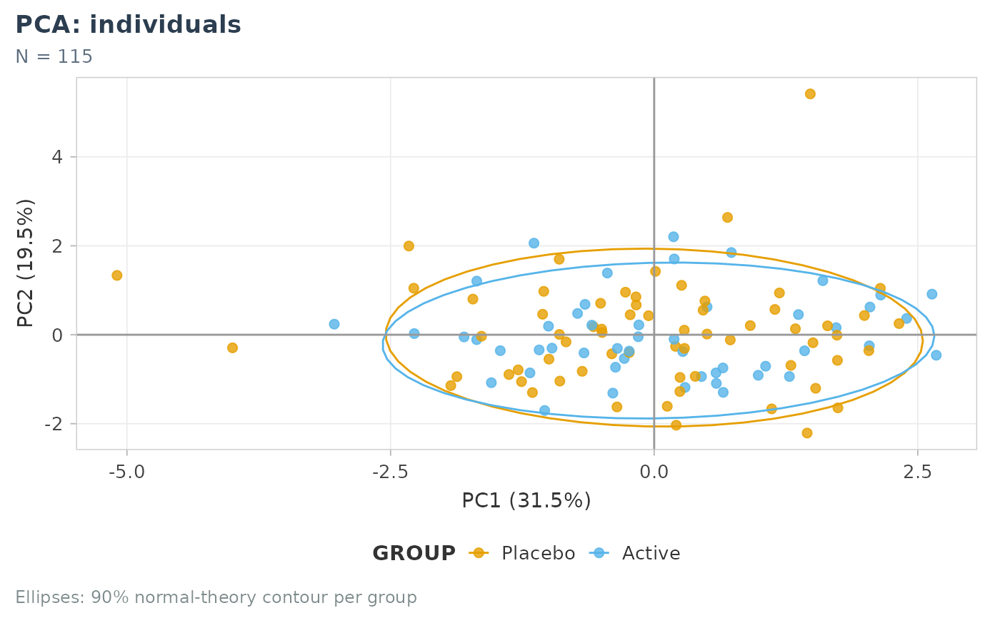
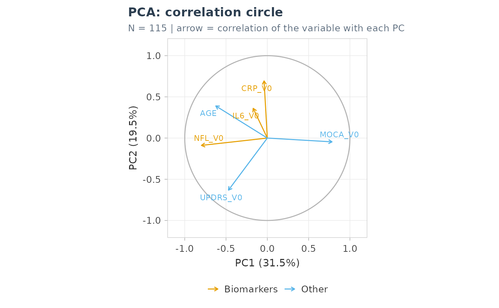
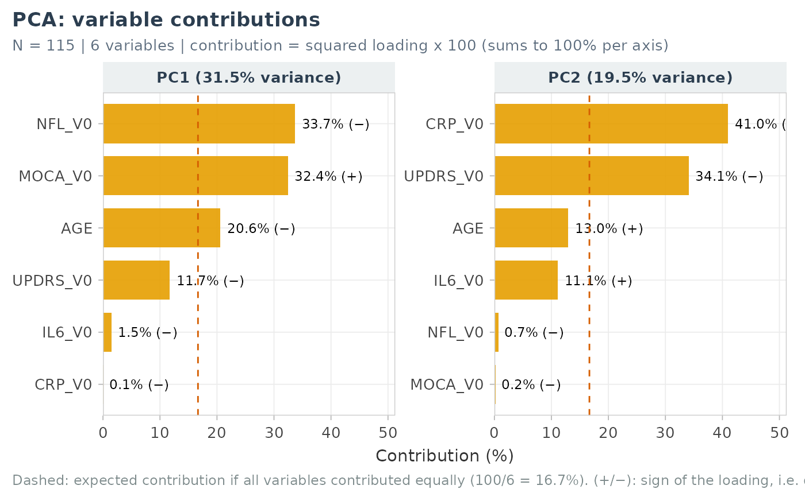
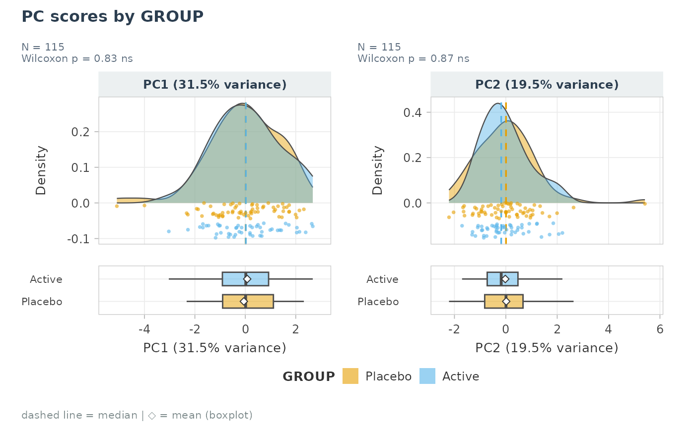

plot_pca_scree(): variance explained per component and cumulative variance, with the Kaiser line (100 / p %).plot_pca_ind(): individuals map, coloured by a variable ofdata(90% normal-theory ellipses for groups).plot_pca_var(): correlation circle.plot_pca_contrib(): contribution of each variable to each component,100 * loading^2(sums to 100% per component), with the expected contribution if all variables contributed equally.plot_pca_distribution(): distribution of the component scores by the levels of categorical variables, withplot_distribution().
Usage
plot_pca_scree(pca_obj, n_pc = 10, base_size = 11, title = "Scree plot")
plot_pca_ind(
pca_obj,
data = NULL,
id_col = NULL,
color_var = NULL,
labels = NULL,
axes = c(1, 2),
palette = NULL,
ellipse = TRUE,
base_size = 11,
title = "PCA: individuals"
)
plot_pca_var(
pca_obj,
labels = NULL,
axes = c(1, 2),
base_size = 11,
groups = NULL,
title = "PCA: correlation circle"
)
plot_pca_contrib(
pca_obj,
axes = 1:2,
labels = NULL,
groups = NULL,
palette = NULL,
top_n = NULL,
base_size = 11,
title = "PCA: variable contributions"
)
plot_pca_distribution(
pca_obj,
data,
group_vars,
id_col = NULL,
pcs = 1:2,
labels = NULL,
palette = NULL,
base_size = 10,
...
)Arguments
- pca_obj
Output of
pca_compute().- n_pc
Number of components shown.
- base_size
Base font size.
- title
Title.
- data
Data frame holding the colour / grouping variables.
- id_col
Identifier column used in
pca_compute().- color_var
Colour variable (name or bare symbol).
- labels
Optional named vector of labels.
- axes
Components shown (two for the maps, any number for the contributions).
- palette
Colours of the groups.
- ellipse
Draw 90% ellipses per group.
- groups
Optional named list
group -> variables(colour of the arrows or bars).- top_n
Keep the
top_ncontributions per component.- group_vars
Categorical variables (names or tidyselect).
- pcs
Components shown.
- ...
Passed to
plot_distribution().
Value
A ggplot; plot_pca_distribution() returns a named list of
patchworks, one per grouping variable.
Examples
pc <- pca_compute(cohort_sim, c(NFL_V0, IL6_V0, CRP_V0, MOCA_V0, UPDRS_V0, AGE), id_col = ID)
plot_pca_scree(pc)

plot_pca_ind(pc, cohort_sim, id_col = ID, color_var = GROUP)

plot_pca_var(pc, groups = list(Biomarkers = c("NFL_V0", "IL6_V0", "CRP_V0")))

plot_pca_contrib(pc, axes = 1:2)

plot_pca_distribution(pc, cohort_sim, GROUP, id_col = ID)[[1]]
